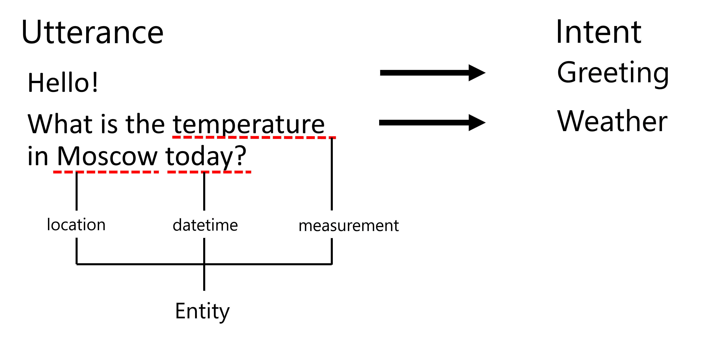

Named Entity Recognition
Up to now, we have mostly been concentrating on one NLP task - classification. However, there are also other NLP tasks that can be accomplished with neural networks. One of those tasks is Named Entity Recognition (NER), which deals with recognizing specific entities within text, such as places, person names, date-time intervals, chemical formulae and so on.
Pre-lecture quiz
Example of Using NER
Suppose you want to develop a natural language chat bot, similar to Amazon Alexa or Google Assistant. The way intelligent chat bots work is to understand what the user wants by doing text classification on the input sentence. The result of this classification is so-called intent, which determines what a chat bot should do.

Image by the author
However, a user may provide some parameters as part of the phrase. For example, when asking for the weather, she may specify a location or date. A bot should be able to understand those entities, and fill in the parameter slots accordingly before performing the action. This is exactly where NER comes in.
✅ Another example would be analyzing scientific medical papers. One of the main things we need to look for are specific medical terms, such as diseases and medical substances. While a small number of diseases can probably be extracted using substring search, more complex entities, such as chemical compounds and medication names, need a more complex approach.
NER as Token Classification
NER models are essentially token classification models, because for each of the input tokens we need to decide whether it belongs to an entity or not, and if it does - to which entity class.
Consider the following paper title:
Tricuspid valve regurgitation and lithium carbonate toxicity in a newborn infant.
Entities here are:
- Tricuspid valve regurgitation is a disease (
DIS) - Lithium carbonate is a chemical substance (
CHEM) - Toxicity is also a disease (
DIS)
Notice that one entity can span several tokens. And, as in this case, we need to distinguish between two consecutive entities. Thus, it is common to use two classes for each entity - one specifying the first token of the entity (often the B- prefix is used, for beginning), and another - the continuation of an entity (I-, for inner token). We also use O as a class to represent all other tokens. Such token tagging is called BIO tagging (or IOB). When tagged, our title will look like this:
| Token | Tag |
|---|---|
| Tricuspid | B-DIS |
| valve | I-DIS |
| regurgitation | I-DIS |
| and | O |
| lithium | B-CHEM |
| carbonate | I-CHEM |
| toxicity | B-DIS |
| in | O |
| a | O |
| newborn | O |
| infant | O |
| . | O |
Since we need to build a one-to-one correspondence between tokens and classes, we can train a rightmost many-to-many neural network model from this picture:

Image from this blog post by Andrej Karpathy. NER token classification models correspond to the right-most network architecture on this picture.
Training NER models
Since a NER model is essentially a token classification model, we can use RNNs that we are already familiar with for this task. In this case, each block of recurrent network will return the token ID. The following example notebook shows how to train LSTM for token classification.
✍️ Example Notebooks: NER
Continue your learning in the following notebook:
Conclusion
A NER model is a token classification model, which means that it can be used to perform token classification. This is a very common task in NLP, helping to recognize specific entities within text including places, names, dates, and more.
🚀 Challenge
Complete the assignment linked below to train a named entity recognition model for medical terms, then try it on a different dataset.
Post-lecture quiz
Review & Self Study
Read through the blog The Unreasonable Effectiveness of Recurrent Neural Networks and follow along with the Further Reading section in that article to deepen your knowledge.
Assignment
In the assignment for this lesson, you will have to train a medical entity recognition model. You can start with training an LSTM model as described in this lesson, and proceed with using the BERT transformer model. Read the instructions to get all the details.